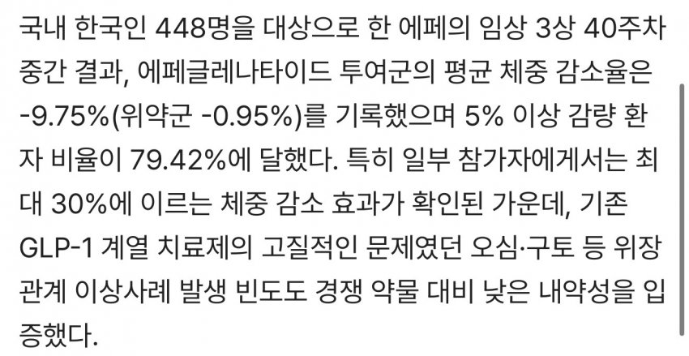
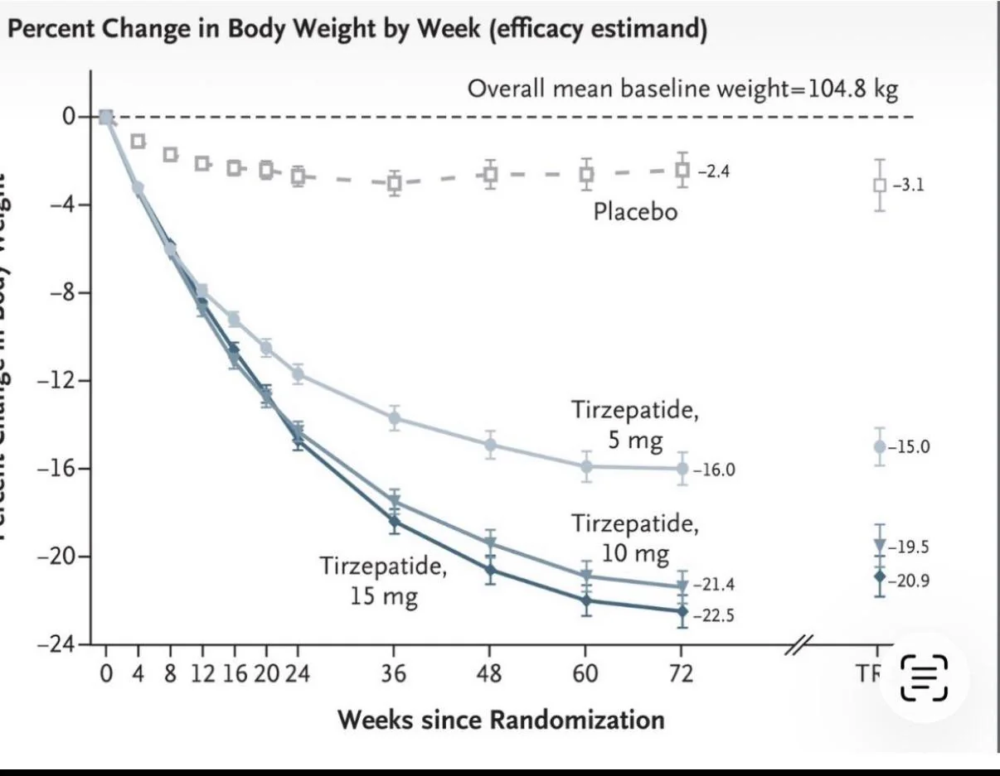
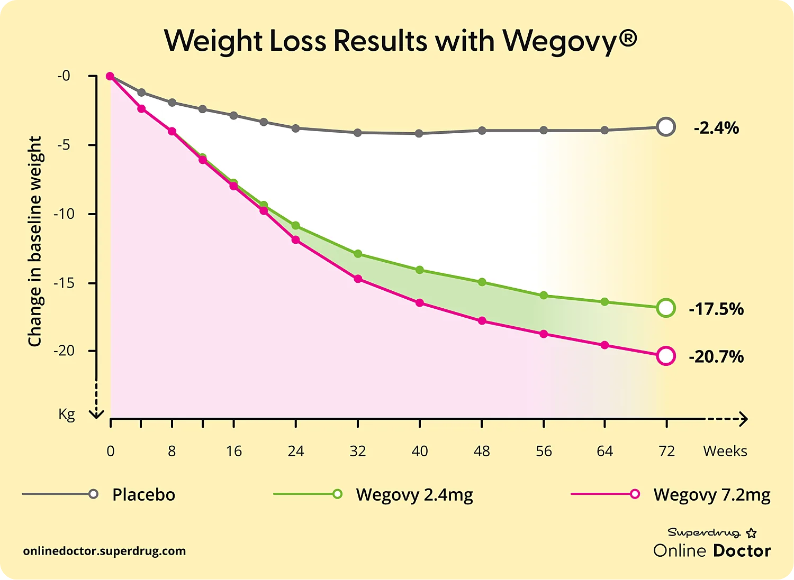

에페는 일단 한국인 448명 대상으로 진행한 임상이라고는 하는데
일단 동일 기간인 40주차 기준으로 공평하게 비교하면
에페 감량 평균 9.75%
위고비 2.4 감량 평균 14% ≒ 단순 용량 비례 기준 마운자로 5mg
위고비 7.2 감량 평균 16% ≒ 단순 용량 비례 기준 마운자로 15mg
마운자로 5mg 약 14%
마운자로 10mg 약 18%
마운자로 15mg 약 20%
체중 감량 효과가 위고비나 마운자로에 비해 낮은 편임.

가격만 싸면 뭐...